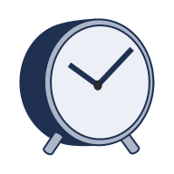

SAM Medical
Ecommerce Website Design & Dev

Overview
SAM Medical is a newly founded company in Vancouver. The managers of the business wanted a website to showcase their products and services. Initially, they didn't plan to have an online store. However, I suggested and created a scalable WooCommerce website that could serve both their short-term and long-term business goals. This structure is an ideal solution to exhibit their products and provide detailed descriptions of their specifications, delivering a great experience for website visitors.
www.sammed.ca-
 Mission
Mission
To conceptualize, design, and develop a responsive website for a small business, implement scalable structure and features for future use as an online store, and ensure its security and discoverability.
-
 Hats Worn
Hats Worn
- I performed user research and market analysis, designed site map and high-fidelity wireframes, created customized WordPress them, and finally developed a responsive WooCommerce website with security and SEO measures in place.
-
 Tools
Tools
Adobe Illustrator, Photoshop & Figma for Design
WordPress & VS Code for Development -
Timeline
4 Weeks | Sep 2023, from Discovery to Delivery
This is an ongoing project. -
 Team
Team
Solo work
-
 Platform
Platform
Responsive Website
User Reasearch
Understanding the Growing Need for Mobility Aids
Canada has one of the fastest-growing senior populations among developed countries. The number of people aged 85 and older is expected to triple by 2046, intensifying the need for accessible healthcare and support services.
As of 2022, 7.6 million Canadians (18.9% ) were aged 65 or older. Many experience age-related mobility challenges. The Canadian Survey on Disability in 2022 reported that over 8 million Canadians aged 15+ have at least one disability, with mobility impairments among the most common.
This growing demand fuels the steady rise in need for mobility aids, such as rollators and canes that enable seniors to maintain independence in daily life.
Barriers to Accessing Mobility Supports
Despite the need, accessing mobility aids remains a challenge for many:
- Digital Literacy Gap: In 2022, 46% of people with disabilities reported difficulty using digital services. Many seniors struggle with navigating online platforms independently.
- Limited In-Store Options: Local pharmacies and medical stores often carry only a limited selection of mobility aids, pushing users to look online for more choices.
- Confusing Online Experiences: Many websites are not senior-friendly. 17% of Canadians with disabilities report issues using the internet for services due to poor accessibility and unclear language.
- Affordability and Coverage: While some provinces offer financial support for mobility aids, awareness and eligibility vary widely, leaving many without the help they need.
Understanding the Goals
The first step was looking through SAM Medical’s lens to uncover their immediate goals and broader potential. In early stakeholder interviews, it became clear that the team primarily wanted a basic, brochure-style website, something minimal to establish an online presence. Their focus was on credibility and legitimacy, rather than functionality or future growth.
However, during our conversations, I noticed a disconnect between their current ask and their ambitious mission: to deliver innovative medical solutions across Canada and improve access for underserved patients. While the stakeholders hadn’t initially considered e-commerce or user-centered features, my research into industry trends, competitor offerings, and user needs (especially among seniors and caregivers) revealed that a scalable, user-friendly platform could offer real long-term value.
I took the initiative to guide the team toward a more forward-thinking solution, one that would not only showcase their credibility but also support future growth and reach. As a result, I proposed building the site on WordPress with WooCommerce capabilities. This allowed us to launch a simple yet scalable website that could later support full e-commerce functionality with minimal friction.
The final design strikes a balance: it fulfills their current need for a professional online presence, while laying the groundwork for product discoverability, accessibility, and future online sales.
Here I highlight the shift from stakeholders' original expectations for a simple website toward a more strategic, scalable UX solution based on research insights and user needs.
- Basic brochure website to establish credibility Scalable e-commerce-ready site to support future growth
- Simple, static content Dynamic product structure with categorized navigation
- No initial interest in e-commerce WooCommerce integration for gradual online sales rollout
- Limited awareness of user accessibility needs Design focused on senior-friendly usability and accessibility
- “Just need something online” A digital touchpoint aligned with business vision and mission
Main Features
Accessible and Responsive Design
Given the primary user group includes seniors and people with disabilities, accessibility and mobile usability were top priorities. These features ensure that the website is inclusive, easy to navigate, and usable across devices regardless of physical or digital literacy limitations:
- WCAG-informed design choices including large text, strong contrast, alt text, and keyboard navigation support.
- Responsive layout tailored for both tablets and mobile phones, recognizing that some users rely on touchscreen devices.
- Simplified interface and consistent UI elements to reduce confusion and ensure an intuitive experience for users with limited tech experience.
Navigation, Search and CTA Integration
To support users I implemented a navigation experience that balances simplicity with guidance:
- “Contact Us for Consultation” CTA that is strategically placed on home page and product pages,directing users to a simplified contact page where they can ask for help choosing a product.
- Search bar available on every page, positioned in the footer, anticipating user behavior, especially seniors who naturally scroll down to look for help or next steps. it improves findability for users who prefer direct search rather than browsing through categories.
- Clear and logical product categorization makes it easy for users to explore even if they don’t know the exact product name
Layered Product Presentation
To make complex medical products approachable and easier to understand, I designed a progressive, modular product page layout. This approach breaks down information into smaller, digestible sections, respecting the cognitive load of senior users and aligning with accessibility best practices. Here's how the structure works:
- General Overview: Each product page opens with a brief, jargon-free summary that clearly states: What the product is, who it's for, how it improves daily life, and detailed product photos.
- Description: In this module the main product features and benefits are highlited to builds user confidence by offering clarity without overwhelming details.
- Additional information: These details are hidden in a second tab and provide information on measurements, material, colors, etc. This section gives caregivers and more informed buyers access to essential technical data without cluttering the main product page.
- Included components: A visual grid that shows what's included in the box. Real photos are used to prevent confusion.
- Compatible accessories: Below the main product section, I feature optional accessories that enhance the base product. Each accessory has its own product page, complete with high-resolution photos, use cases, and details. Accessory product pages include a “You may also like” section that suggests compatible base products. The purpose is to support modular purchases and upselling while maintaining clarity. It ensures that accessories are not overlooked and gives buyers full control over customization.
Site Map
To ensure users—especially seniors and caregivers—can easily navigate the website, I created a clear and scalable site structure. This site map outlines the content hierarchy, allowing visitors to intuitively move from general categories to specific products, accessories, and support options. The design emphasizes on:
- Clear categorization of products for easier discovery.
- Consistent structure on all product pages
- A dedicated Contact Us pathway available across key sections.
- Search functionality to help users find what they need at any stage.
- A homepage that introduces the company and brands, highlights product categories, and invites users to reach out.
This structure supports both current business needs and future expansion, such as enabling e-commerce capabilities, while maintaining an accessible and senior-friendly layout.
View on Figma
High-Fidelity Wireframe
After validating the site map with stakeholders, I moved directly into developing a custom WordPress theme to save time and streamline the process. This approach allowed me to work efficiently while staying aligned with the brand identity and structural modules defined in the site map. To ensure a seamless and consistent user experience across all devices, I designed both the mobile and desktop views in parallel.
Home Page
The homepage was designed to immediately communicate trust, simplicity, and accessibility. It features a clean layout with clear product categories, a brief introduction to the company, and a prominent “Contact Us for Consultation” button to guide users toward support. The design balances informative content with minimal distractions, making it easy for seniors and caregivers to navigate from the very first interaction.


Product Category
The product category was designed to help users easily browse and compare different mobility aids. It features clear breadcrumb, large clickable product cards, and straightforward navigation.


Product Page
The product page was structured to present information in a clear, step-by-step layout—starting with a general overview, followed by detailed specifications, included components, and optional accessories. Each section is visually separated for clarity, and a “Contact Us” call-to-action ensures users can easily reach out with questions.


Optional Accessories Page
The optional accessories page provides detailed information and images for each add-on, helping users understand how they enhance the main product. Clear descriptions and a related products section support informed decision-making, especially for users seeking personalized solutions.


Contact Page
The contact page features a simple, accessible layout with a clear form and essential contact details, making it easy for users, especially seniors, to get in touch. A product category checklist is included to help users specify their interests, streamlining communication and improving response relevance.


Reflections
Lesson Learned
- Advocating for scalable design:
While the client initially requested a simple online presence, I learned the value of guiding stakeholders toward long-term, user-centered solutions. By presenting clear UX reasoning and practical benefits, I was able to align the final design with both their current and future goals. - The importance of accessibility:
Designing for seniors and caregivers emphasized the critical role of accessibility in UX. I gained deeper insight into creating intuitive layouts, readable content, and simplified interactions that support users with limited digital experience.